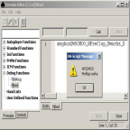

In addition to logging it might be useful to notify the user at run-time and pause script-execution, mainly in a debugging session. For this usecase OpenHoldem provides a symbol msgbox$TEXT, that — surprise — will show a messagebox with text. As the character-set in symbols is slightly limited the following replacements will take place.
The symbol msgbox$TEXT will evaluate to 0. An example:
